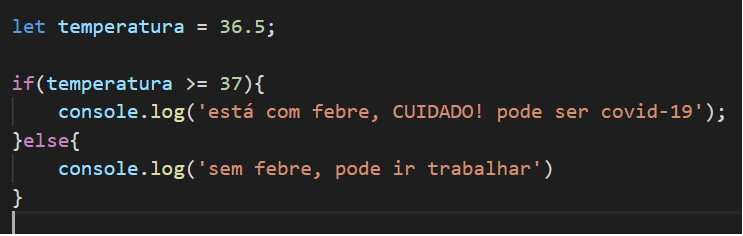
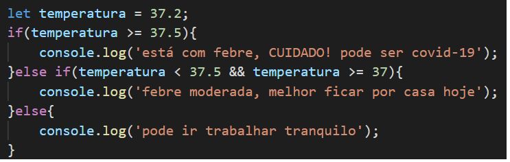
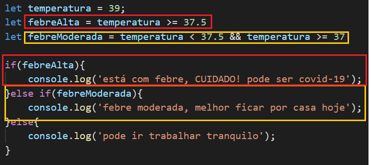

if...else: estrutura condicional, se for true executa um bloco, se for false executa outro bloco
usando else if()
quando o if tem só uma linha de código ele aceita não colocar as {} mas não é uma boa prática
é uma boa temperatura transformar a condicional em variável. Por exemplo:
